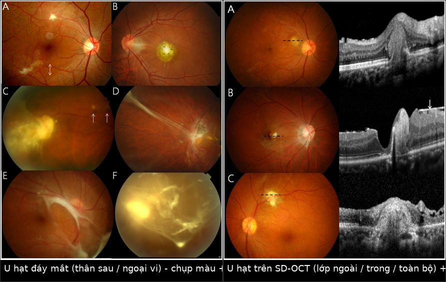
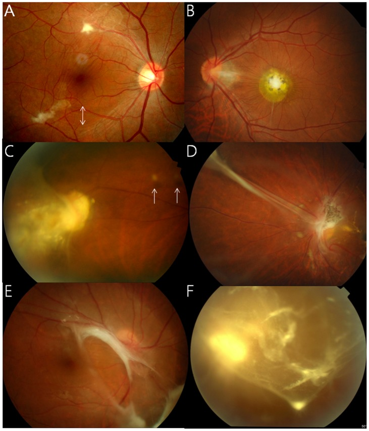
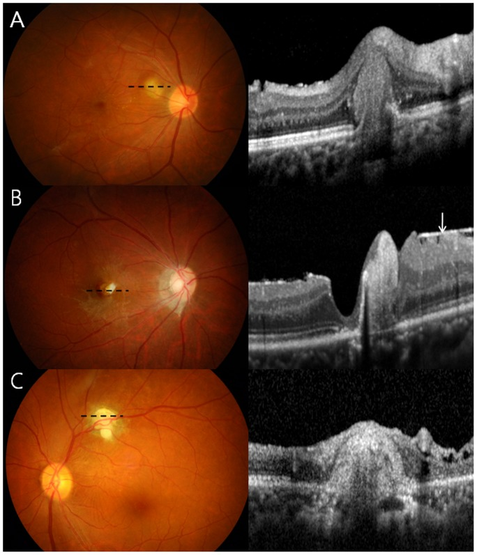
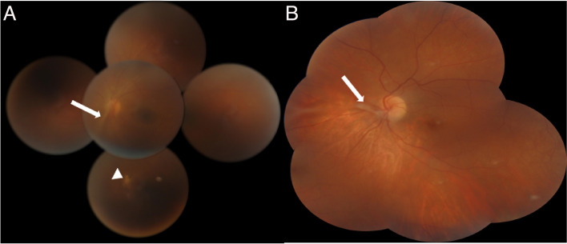
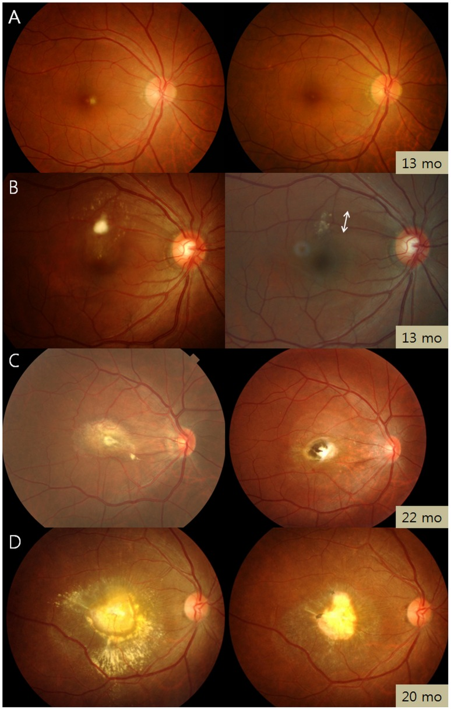

1464 — Toxocariasis nội nhãn ở NGƯỜI LỚN: u hạt võng mạc muộn / Adult ocular toxocariasis
Tags: pattern:u-hat-vong-mac pattern:viem-trung-gian pattern:mat-mot-ben pattern:day-xo-dich-kinh vung:vong-mac vung:dich-kinh vung:hoang-diem vung:mat score:IgG-ELISA protocol:OCT protocol:FA protocol:sieu-am-B-scan protocol:MRI-hoc-mat protocol:Goldmann-Witmer protocol:albendazole
Mức chắc chắn (certainty): tổng hợp y văn (literature synthesis) — số liệu chính từ đoàn hệ 101 người lớn (PMC4055477, PLoS Negl Trop Dis 2014), nghiên cứu 76 ca + 64 ca chứng về IgE dịch nội nhãn (PMC12302778, 2025), 3 báo cáo ca/loạt ca có ảnh (PMC4055477, PMC10397159) và bài tổng quan (PMC4116038). Chỗ suy luận được đánh dấu [suy luận].
Vì sao phải có bài riêng cho người lớn: 466 mô tả toxocariasis nội nhãn (ocular toxocariasis — OT) ở trẻ, nơi bệnh cảnh kinh điển là leukocoria / viêm nội nhãn do giun. Ở người lớn, OT không giống vậy: tuổi trung bình 51,7 ± 12,6 (21–77), 75,2% nam, và 92,1% đến với một u hạt võng mạc đơn độc chứ không phải viêm nội nhãn (PMC4055477). Vì thế người lớn thường bị dán nhãn "viêm màng bồ đào sau/trung gian không rõ nguyên nhân" rồi theo dõi nhiều năm — trong khi chỉ cần một xét nghiệm huyết thanh và một câu hỏi về thịt/tạng sống là chẩn đoán sáng tỏ.
1. Tổng quan bệnh học – cơ chế hình ảnh
- Bệnh học (pathology): người nuốt trứng đã phôi thai của Toxocara canis/cati (đất nhiễm) hoặc ấu trùng L3 sống trong mô vật chủ trung gian nấu chưa chín. Ấu trùng xuyên ruột → máu → dừng lại ở mao mạch võng mạc/hắc mạc (mắt là "ngõ cụt" miễn dịch) → không lớn thành giun trưởng thành, chỉ di chuyển chậm vài trăm µm/tháng rồi chết hoặc bị bao bọc. Mô phản ứng tạo u hạt giàu bạch cầu ái toan → xơ hóa; xơ co kéo sinh màng trước võng mạc (ERM) và dải xơ dịch kính–võng mạc (PMC4055477).
- Con đường nhiễm ở người lớn — đây là điểm dịch tễ quan trọng nhất: trong 101 ca, 80,8% có tiền sử ăn gan bò sống và 71,2% ăn thịt sống/tái, cao hơn hẳn nhóm chứng (PMC4055477); cùng nhóm tác giả ghi nhận ở Hàn Quốc 60–90% ca toxocariasis toàn thân có tiền sử ăn gan bò sống (PMC4116038). Không hỏi tiền sử ăn gan bò/thịt tái = bỏ mất manh mối rẻ nhất.
- TẠI SAO u hạt trắng và TẠI SAO OCT thấy khối tăng phản xạ có bóng lưng (posterior shadowing): khối u hạt là tế bào viêm + xơ + sắc tố tập trung, mật độ quang học cao hơn võng mạc bình thường → trên SD-OCT hiện khối tăng phản xạ đặc, phá vỡ lớp, che ánh sáng phía sau (shadowing); vì tế bào/hạt sắc tố tán xạ và hấp thụ ánh sáng cận hồng ngoại nên các lớp bên dưới không đọc được — đây là lý do phải đo kích thước và độ sâu trên khung cắt qua bờ tổn thương, không qua tâm (PMC4055477, Hình 2–3). Trên ảnh màu, khối trắng–xám, bờ không rõ, có thể có sắc tố quanh bờ vì hắc bào bị kích thích.
- Số liệu mô tả u hạt (101 người lớn — dùng làm ngưỡng đọc): u hạt 92,1%; vị trí cực sau 50,5%, ngoại vi 44,1%, hoàng điểm 17,2%, đầu thị 2,2%, phối hợp 5,4%. U hạt cực sau đi kèm khuyết sợi thần kinh võng mạc (RNFL) 53,2% vs 7,3% ở u hạt ngoại vi (P < 0,001) và ERM 40,4% vs 14,6% (P = 0,007); u hạt ngoại vi đi kèm đục dịch kính 31,7% vs 12,8% (P = 0,031) — nghĩa là vị trí u hạt dự báo trước biến chứng, không cần chờ biến chứng xuất hiện.
- Di chuyển nội nhãn — dấu hiệu gần như đặc hiệu: u hạt đổi vị trí giữa các lần chụp ở 15/93 ca (16,1%) — xảy ra khi ấu trùng còn sống (PMC4055477). Không u nào khác trong mắt "tự đi"; đây là dấu chốt vào mạnh nhất trên lâm sàng.
- Toàn thân không hề "sạch": trong số ca được chụp, u hạt gan 17,6% (3/17 trên CT bụng), u hạt phổi 42,9% (6/14 trên CT ngực) nhưng chỉ 5,6% trên X-quang ngực (4/72) — X-quang ngực bình thường không loại trừ thể nội tạng; u hạt não 8,3% (1/12) (PMC4055477).
- Xét nghiệm — vì sao người lớn khó hơn trẻ: IgE huyết thanh > 100 UI/mL gặp ở 39/56 (69,6%), tăng bạch cầu ái toan (> 500/µL hoặc ≥ 10%) chỉ 10/86 (11,6%) → bạch cầu ái toan bình thường là chuyện thường, đừng dùng nó để loại trừ. ELISA IgG Toxocara huyết thanh dương tính khi ≥ 0,250 (đơn vị OD, ngưỡng theo lab) (PMC4055477). Ở dịch nội nhãn, ngưỡng mới: IgE dịch ≥ 10,65 ng/mL (Se 77,6%, Sp 98,4%), tỷ lệ IgE dịch/huyết thanh ≥ 0,48 (Se 78,4%, Sp 98,4%) — nhưng độ nhạy ở người lớn chỉ 66,7% so với 82,7% ở trẻ; hệ số Goldmann–Witmer (GWC) có AUC chỉ 0,527 trong đoàn hệ này (PMC12302778). [suy luận] Người lớn đã có IgG lưu hành do phơi nhiễm nhiều lần nên tỷ lệ sản xuất kháng thể tại chỗ bị "pha loãng" — GWC thấp không loại trừ OT ở người lớn, trái với thói quen đọc xét nghiệm ở trẻ.
- Kết cục thị lực: BCVA trung bình 0,51 logMAR (≈ 20/64) → 0,45 logMAR (≈ 20/56) sau 15,0 ± 17,1 tháng; mất thị lực nặng (< 20/200) 16,8% lúc đầu → 13,9% lúc cuối — tức một phần đáng kể không hồi phục, lý do phải điều trị và theo dõi chứ không "chờ tự khỏi".
2. Mẫu hình + chẩn đoán phân biệt theo vị trí (gamut)
- U hạt cực sau/hoàng điểm (50,5%): khối trắng–xám < 1 đường kính đĩa (disc diameter), bờ không rõ, không có sẹo sắc tố cũ kề bên; kèm khuyết RNFL và ERM. Gamut: OT, toxoplasmosis (sẹo cũ + "headlight in the fog"), u hạt lao, u hạt sarcoid, melanoma hắc mạc nhỏ, drusen lớn, di vật nội nhãn giữ lại.
- U hạt ngoại vi (44,1%) + dải xơ về đĩa thị: dải trắng chạy từ ngoại vi tới đầu thị, co kéo võng mạc, có thể bong võng mạc co kéo (12,9%). Gamut: OT, FEVR người lớn, bệnh Coats, PHPV tồn tại, vảy võng mạc do viêm, sẹo sau chấn thương.
- Viêm nội nhãn giả u (nematode endophthalmitis) — 8 ca (7,9%): môi trường đục, không thấy u hạt; chẩn đoán chỉ đặt được sau khi cắt dịch kính làm trong môi trường (2 ca xác nhận như vậy). Gamut: OT, viêm nội nhãn nội sinh, lymphoma nội nhãn, bong võng mạc toàn bộ.
- Mnemonic theo bước chẩn đoán — "GRANULOMA": Gan bò/thịt sống (tiền sử), Retina một bên, Amorphous khối trắng (bờ mờ), Ngoại vi + dải xơ, U hạt di chuyển, Lab: IgG ELISA ≥ 0,250 + IgE > 100, OCT tăng phản xạ + shadowing, Migration ghi lại bằng ảnh so sánh, Albendazole + corticoid.
- Ngưỡng phân biệt theo kích thước và bối cảnh: u hạt OT thường < 1 DD (≈ 1,5 mm)** và **đơn độc một bên**; khối **> 2 DD, nhiều ổ hai bên, kèm hạch/sốt → nghĩ lao, sarcoid, di căn, lymphoma. Trẻ < 5 tuổi có leukocoria + vôi hóa thô → retinoblastoma, không phải OT; ở người lớn, khối sắc tố lớn phải loại melanoma hắc mạc (448).
3. Bảng so sánh phân biệt (ma trận đối chiếu)
| Thực thể (entity) | Hình ảnh điển hình (màu / OCT / B-scan) | Chốt vào (rule-in) | Chốt loại (rule-out) | Gợi ý xác nhận |
|---|---|---|---|---|
| OT — u hạt cực sau (người lớn) | Khối trắng–xám < 1 DD, bờ mờ, không sẹo sắc tố kề bên; OCT: khối tăng phản xạ + shadowing, phá lớp ngoài; kèm khuyết RNFL 53,2%, ERM 40,4% | Đơn độc, một bên, tiền sử gan bò/thịt tái + IgG ELISA ≥ 0,250 | Sẹo sắc tố cũ liền kề → toxoplasmosis; vôi hóa thô → retinoblastoma (trẻ); > 2 DD + nhiều ổ → lao/sarcoid/lymphoma | ELISA IgG Toxocara, IgE > 100 UI/mL, OCT qua bờ tổn thương |
| OT — u hạt ngoại vi + dải xơ | Dải trắng từ ngoại vi → đầu thị, co kéo, đục dịch kính 31,7%, bong võng mạc co kéo 12,9% | Dải xơ một bên + u hạt ở đầu dải | Dải xơ hai bên, đối xứng → FEVR; vôi hóa/dây xơ thể thủy tinh → PHPV | Siêu âm B-scan 10–20 MHz, FA (rò mạch ở u hạt) |
| U hạt di chuyển | U hạt đổi vị trí giữa 2 lần chụp (16,1% ca) | Ảnh so sánh cùng mắt, cùng vùng, khác vị trí | U hạt cố định + bờ xơ dày → u thật/sarcoid | Lưu ảnh màu + OCT từng lần, đo khoảng cách tới đĩa thị |
| Toxoplasmosis võng mạc | Sẹo sắc tố cũ + nốt mới ở bờ sẹo ("headlight in the fog"), viêm dịch kính mạnh | Nốt vệ tinh sát bờ sẹo cũ | Không sẹo cũ, u hạt đơn độc lạnh lẽo → OT | IgG/IgM Toxoplasma, PCR dịch kính |
| U hạt sarcoid / lao hắc mạc | Nhiều u hạt vàng–trắng, dọc mạch, hai bên; OCT: khối trong hắc mạc làm dày choroid | Nhiều ổ, hai bên, kèm hạch/phổi | Một ổ đơn độc < 1 DD, không tổn thương toàn thân → OT | ACE, CT ngực, IGRA, sinh thiết nếu cần |
| Melanoma hắc mạc | Khối dưới võng mạc dày, sắc tố cam (lipofuscin), B-scan nội phản xạ THẤP (hollowness) | B-scan giảm phản xạ trong lòng khối + T1 sáng/T2 tối | B-scan tăng phản xạ đều, không hollowness → u hạt | B-scan + MRI hốc mắt, theo dõi kích thước |
| DUSN (425) | Đốm xám–trắng ngoại võng mạc di chuyển nhanh, thấy ấu trùng ở 25–40%; muộn: teo thị | Nhìn thấy ấu trùng hoặc đốm di chuyển + ERG âm | U hạt cố định, có dải xơ → OT | Soi đáy mắt nhiều lần, ERG, OCT |

Trái: u hạt trắng–xám ở cực sau/ngoại vi, khuyết sợi thần kinh (mũi tên). Phải: u hạt trên SD-OCT — khối tăng phản xạ phá lớp ngoài/trong kèm bóng lưng. Nguồn: Ahn SJ et al., PMC4055477, CC BY 4.0. Ảnh ghép letterbox, không crop.4. Protocol chụp + thang đo/xét nghiệm chuẩn hóa
- Chụp ảnh đáy mắt màu (color fundus) toàn vùng: bắt buộc cùng góc, cùng máy mỗi lần để phát hiện di chuyển u hạt; chụp 7 hướng hoặc ultra-widefield vì u hạt ngoại vi 44,1% nằm ngoài ảnh 45°.
- OCT (SD-OCT, cắt 5–7 µm): cắt qua bờ u hạt để đo độ dày võng mạc, mức phá lớp, ERM, dịch dưới võng mạc; tránh cắt đúng tâm vì shadowing che mất lớp bên dưới. OCT EDI khi nghi u hạt nằm trong hắc mạc (phân biệt sarcoid/lao).
- Siêu âm B-scan 10–20 MHz: đầu dò qua mí/tiếp xúc, công suất thấp; mục tiêu: khối đặc tăng phản xạ vừa–cao, không hollowness, dải xơ dịch kính, bong võng mạc co kéo, và không có vôi hóa. Khi môi trường đục (viêm nội nhãn giả u) B-scan là bắt buộc trước khi cắt dịch kính.
- FA / FA-ICGA: FA cho thấy tăng huỳnh quang ở u hạt + rò (leakage) thì muộn, và vùng giảm tưới máu quanh dải xơ; ICGA để loại hemangioma hắc mạc và đánh giá tổn thương hắc mạc sâu.
- MRI hốc mắt (T1 + T2 fat-sat + sau tiêm, lát ≤ 3 mm): chỉ khi B-scan không kết luận hoặc nghi melanoma/khối hắc mạc lớn. U hạt OT: T1 đồng–giảm, T2 giảm tín hiệu (xơ), ngấm thuốc; melanoma: T1 tăng, T2 giảm, hollowness trên B-scan.
- Xét nghiệm theo thứ tự (không làm cả loạt ngay):
- ELISA IgG Toxocara huyết thanh — dương khi ≥ 0,250 (OD, ngưỡng theo lab).
- IgE toàn phần huyết thanh — > 100 UI/mL (69,6% ca); bạch cầu ái toan KHÔNG dùng để loại trừ (chỉ 11,6% tăng).
- IgE + IgG dịch tiền phòng/dịch kính khi huyết thanh không kết luận: IgE dịch ≥ 10,65 ng/mL, tỷ lệ IgE dịch/huyết ≥ 0,48 (Sp 98,4%); nhớ Se chỉ 66,7% ở người lớn.
- GWC ≥ 3 kinh điển cho sản xuất kháng thể tại chỗ, nhưng AUC 0,527 trong OT người lớn → âm tính không loại trừ (PMC12302778).
- Điều trị và mốc theo dõi: albendazole 400 mg × 2 lần/ngày × 14 ngày + prednisolone uống 0,5–1 mg/kg/ngày; tỷ lệ tái phát 6 tháng 17,4% so với 54,5% khi chỉ dùng corticoid (P = 0,045). Tái khám 1 tháng/lần trong 3 tháng đầu, rồi 3 tháng/lần đến 1 năm; chụp ảnh + OCT mỗi lần để bắt di chuyển/tái phát (PMC4055477).
- Khi nào mổ: bong võng mạc co kéo (12,9%), ERM nặng/màng trước võng mạc, đục dịch kính kéo dài, hoặc môi trường đục không chẩn đoán được (cắt dịch kính chẩn đoán — 2 ca chỉ thấy u hạt sau khi làm trong môi trường).
flowchart TD
A[Khối trắng võng mạc MỘT BÊN ở người lớn] --> B{Có sẹo sắc tố cũ kề bên?}
B -->|Có| C[Nghĩ toxoplasmosis: IgG/IgM, PCR dịch kính]
B -->|Không| D{Có tiền sử gan bò/thịt sống + IgE cao?}
D -->|Có| E[ELISA IgG Toxocara huyết thanh]
D -->|Không| F[Nhiều ổ/hai bên? → lao, sarcoid, lymphoma]
E -->|≥ 0,250| G[OT: OCT qua bờ + B-scan + ảnh so sánh vị trí]
E -->|Âm mà vẫn nghi| H[IgE dịch ≥ 10,65 ng/mL hoặc tỷ lệ ≥ 0,48]
H --> G
G --> I{U hạt di chuyển hoặc tái phát?}
I -->|Có| J[Albendazole 400 mg x2/ngày 14 ngày + prednisolone 0,5-1 mg/kg]
I -->|Không| K[Theo dõi ảnh + OCT mỗi 1-3 tháng]
J --> L[Bong võng mạc co kéo / ERM nặng → cắt dịch kính]
5. Biến thể bình thường và cạm bẫy
- U hạt "lạnh" nhỏ < 1 DD ở cực sau dễ bị đọc là drusen hoặc sẹo cũ — drusen hai bên, đối xứng, không khuyết RNFL; OT một bên, có khuyết RNFL 53,2%.
- Cạm bẫy 1 — "GWC âm nên loại OT": sai ở người lớn (AUC 0,527; Se IgE dịch chỉ 66,7%). Huyết thanh ELISA + tiền sử ăn là chốt.
- Cạm bẫy 2 — bạch cầu ái toan bình thường: chỉ 11,6% ca tăng; đừng chờ eosinophilia.
- Cạm bẫy 3 — u hạt di chuyển bị đọc là "tổn thương mới/xuất hiện thêm": nếu không lưu ảnh cùng góc, lần sau sẽ tưởng bệnh tiến triển và cân nhắc sinh thiết mắt oan. Luôn chụp lại đúng vùng, đúng góc.
- Cạm bẫy 4 — X-quang ngực bình thường: u hạt phổi chỉ 5,6% trên X-quang nhưng 42,9% trên CT → không loại trừ thể nội tạng bằng X-quang.
- Cạm bẫy 5 — gọi là "viêm màng bồ đào trung gian vô căn": 67,9% ca OT có viêm trung gian; bệnh nhân trẻ–trung niên một bên + vitritis + u hạt ngoại vi phải nằm trong gamut OT trước khi làm "viêm vô căn".
- Cạm bẫy 6 — nhầm với melanoma khi khối lớn: melanoma có hollowness (giảm phản xạ trong lòng) trên B-scan, lipofuscin cam, T1 tăng; u hạt OT tăng phản xạ đều và không vôi hóa. Chọc kim qua khối nghi melanoma là chống chỉ định.
- Biến thể bình thường dễ nhầm: drusen thị (optic disc drusen) — tăng phản xạ, vôi hóa trên B-scan, không có u hạt võng mạc; dải xơ bẩm sinh/PHPV ở người trẻ một bên nhưng không có u hạt hoạt động và không đáp ứng corticoid.
6. Tự lượng giá — Blind Quiz
Ca 1 — Nam 52 tuổi, nhìn mờ mắt trái 3 tuần, không đau. Đáy mắt: một khối trắng nhỏ ở cực sau.

- Câu hỏi: Khối nằm ở lớp nào? Có sẹo sắc tố kề bên không? Ba chẩn đoán phân biệt và một câu hỏi tiền sử quyết định?
Bấm để hiện đáp án (findings + chẩn đoán)
- Dấu hiệu: u hạt trắng–xám bờ mờ < 1 DD ở cực sau, kèm khuyết sợi thần kinh võng mạc (mũi tên); các panel khác của hình cho thấy u hạt ngoại vi + mảnh vụn dịch kính tròn, nếp võng mạc co kéo và bong võng mạc co kéo.
- Chẩn đoán: toxocariasis nội nhãn (OT) người lớn — khối là u hạt viêm–xơ, không phải sẹo hoại tử; không có sẹo sắc tố cũ kề bên nên ít nghĩ toxoplasmosis.
- Chốt: hỏi ăn gan bò/thịt tái (80,8%/71,2%) + ELISA IgG Toxocara ≥ 0,250; thêm IgE > 100 UI/mL.
- Nguồn: Ahn SJ et al., PLoS Negl Trop Dis 2014, PMC4055477 Fig. 1, CC BY 4.0.
Ca 2 — Cùng bệnh nhân, OCT qua tổn thương. Vì sao không đọc được lớp bên dưới?

- Câu hỏi: Khối nằm ở lớp ngoài, lớp trong hay toàn bộ? Vì sao có bóng lưng? Dấu hiệu nào giúp phân biệt với melanoma?
Bấm để hiện đáp án
- Dấu hiệu: khối tăng phản xạ đặc phá lớp võng mạc — panel A lớp ngoài, B lớp trong, C toàn bộ; bờ khối làm biến dạng võng mạc, kèm màng trước võng mạc.
- Vì sao shadowing: tế bào viêm + xơ + sắc tố tán xạ/hấp thụ ánh sáng OCT → không có tín hiệu trả về từ hắc mạc; vì vậy phải cắt qua bờ tổn thương để đo độ dày.
- Phân biệt melanoma: B-scan melanoma giảm phản xạ trong lòng (hollowness) và T1 tăng; u hạt OT tăng phản xạ đều.
- Nguồn: Ahn SJ et al., PMC4055477 Fig. 2, CC BY 4.0.
Ca 3 — Nữ 20 tuổi, mắt phải nhìn mờ nhiều tháng; thấy dải trắng chạy từ ngoại vi vào đầu thị.

- Câu hỏi: Dải xơ đi từ đâu tới đâu? Chẩn đoán phân biệt ở người trẻ một bên? Cần chụp gì để tìm "đầu kia" của dải?
Bấm để hiện đáp án
- Dấu hiệu: dải xơ dịch kính–võng mạc chạy từ ngoại vi tới đầu thị (mũi tên trắng) ở bệnh nhân 12 tuổi (A) và 20 tuổi (B); kèm nang võng mạc ngoại vi trong cùng bệnh cảnh (bài gốc mô tả bằng soi 3 gương và UBM: nang 2,6 mm thành mỏng).
- Chẩn đoán: OT thể ngoại vi — dải xơ là di chứng co kéo của u hạt ngoại vi; phân biệt FEVR (hai bên, đối xứng), PHPV, Coats.
- Việc cần làm: soi toàn võng mạc/ultra-widefield + B-scan 10–20 MHz tìm u hạt ở đầu ngoại vi của dải, và chụp ảnh lưu để phát hiện di chuyển.
- Nguồn: Maamouri R et al., J Ophthalmic Inflamm Infect 2023, PMC10397159 Fig. 1, CC BY 4.0.
Ca 4 — Cùng bệnh, bốn kiểu kết cục: so cột trái (lúc chẩn đoán) với cột phải (lần khám cuối).

- Câu hỏi: Bốn kiểu tiến triển (A–D) khác nhau ở điểm nào? Kiểu nào khiến bệnh nhân không hồi phục thị lực?
Bấm để hiện đáp án
- Dấu hiệu: cột trái = lúc chẩn đoán, cột phải = lần khám cuối: (A) tan hoàn toàn, (B) tan một phần, (C) tan một phần + sẹo sắc tố, (D) co kéo/bong võng mạc.
- Ý nghĩa: kiểu D (co kéo) là nhóm mất thị lực không hồi phục — tương ứng bong võng mạc co kéo 12,9% và ERM 26,7%; đây là nhóm cần cắt dịch kính sớm.
- Nguồn: Ahn SJ et al., PMC4055477 Fig. 4, CC BY 4.0.
Bài liên quan chéo
- 466 – Toxocariasis nội nhãn ở trẻ (thể trẻ: leukocoria/viêm nội nhãn)
- 425 – DUSN & ấu trùng di động dưới võng mạc (chẩn đoán phân biệt "ấu trùng nhìn thấy được")
- 447 – Đốm trắng võng mạc (gamut đốm trắng: OT nằm trong nhóm này)
- 448 – U hắc mạc (melanoma: hollowness trên B-scan, T1 tăng)
- 452 – Hoại tử võng mạc ARN/CMV (viêm võng mạc một bên ở người lớn)
- 1425 – Viêm nội nhãn sau tiêm nội nhãn (viêm nội nhãn cấp — phân biệt với thể giả u)
- 6132 – Viêm giác mạc nhiễm khuẩn liên quan kính tiếp xúc (mắt đỏ + giảm thị lực cấp)
Ảnh
1464_toxo_PMC4055477-F1.jpg— ảnh đáy mắt màu 6 panel (u hạt cực sau/ngoại vi, mảnh vụn dịch kính, bong võng mạc co kéo).1464_toxo_PMC4055477-F2.jpg— SD-OCT: u hạt lớp ngoài/lớp trong/toàn bộ + shadowing.1464_toxo_PMC4055477-F4.jpg— diễn tiến u hạt (A–D): tan hoàn toàn → co kéo.1464_toxo_PMC10397159-F1.jpg— dải xơ dịch kính–võng mạc từ ngoại vi tới đĩa thị (12 và 20 tuổi).composite_toxo_day-mat-vs-OCT.jpg— ảnh ghép letterbox (F1 + F2), tạo bằngtools/make_composite.py.- Nguồn + giấy phép từng ảnh:
images/CREDITS.md.
Không dùng để chẩn đoán độc lập khi chưa có người hướng dẫn.